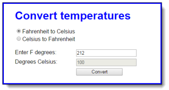
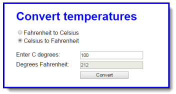

In this exercise, you’ll use radio buttons to determine whether the conversion is from Fahrenheit to Celsius or vice versa. You’ll also modify the DOM so the labels change when a radio button is clicked. When the application starts, it will look like this:

When the user clicks on the second radio button, the labels will change so the interface will look like this:

1. Open the HTML and JavaScript files in this folder: \ch06\convert_temps\
2. Note that the JavaScript file has some starting JavaScript code, including the $ function, a clearTextBoxes() function, and an onload event handler that attaches three event handlers named convertTemp(), toCelsius(), and toFahrenheit().
3. Code the toFahrenheit() function that is executed when the user clicks on the second radio button. It should change the text in the labels for the text boxes so they read as in the second interface above. It should also call the clearTextBoxes() function to clear the text boxes.
4. Code the toCelsuis() function that is executed when the user clicks on the first radio button. It should change the text in the labels for the text boxes so they read as in the first interface above. It should also call the clearTextBoxes() function to clear the text boxes.
5. Code the convertTemp() function without any data validation. It should calculate the temperature based on which button is checked. To convert Fahrenheit to Celsius, first subtract 32 from the Fahrenheit temperature, and then multiply that result by 5/9. To convert Celsius to Fahrenheit, first multiply Celsius by 9/5, and then add 32. The result in either case should be rounded to zero decimal places.
6. Add data validation to the convertTemp() function. The only test is whether the entry is a valid number. If it isn’t, this message should be displayed in a dialog box: “You must enter a valid number for degrees.”
7. Add any finishing touches to the application like moving the focus to the first text box whenever that’s appropriate.
8. Comment your code.
9. Complete this and be prepared to submit it.
This exercise has you make a minor modification to the FAQs application. When you’re done, this application should work the same as before, except that only one answer can be displayed at a time. In other words, when the user clicks on a heading to display the answer, the other answers must be hidden.
1. Open the HTML and JavaScript files in this folder: \ch06\faqs\ Then, run the application to refresh your memory about how it works.
2. Add code to the toggle() function so only one answer can be displayed at a time. To do that, create an array of the h2 elements. Then, use a for loop to go through the h2 elements in the array and remove the class attribute for all h2 elements that aren’t the one that has been clicked. You also need to remove the class attributes for all of the div siblings of the h2 elements that weren’t clicked.
3. Comment your code.
4. Complete this and be prepared to submit it.